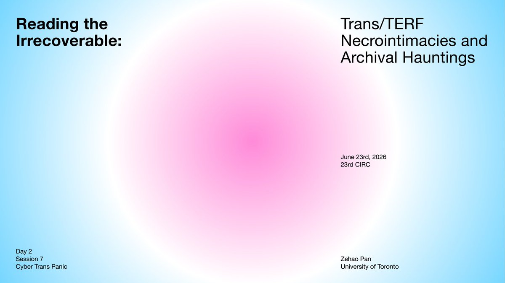
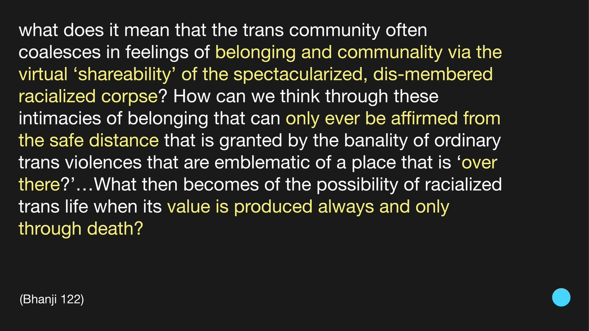
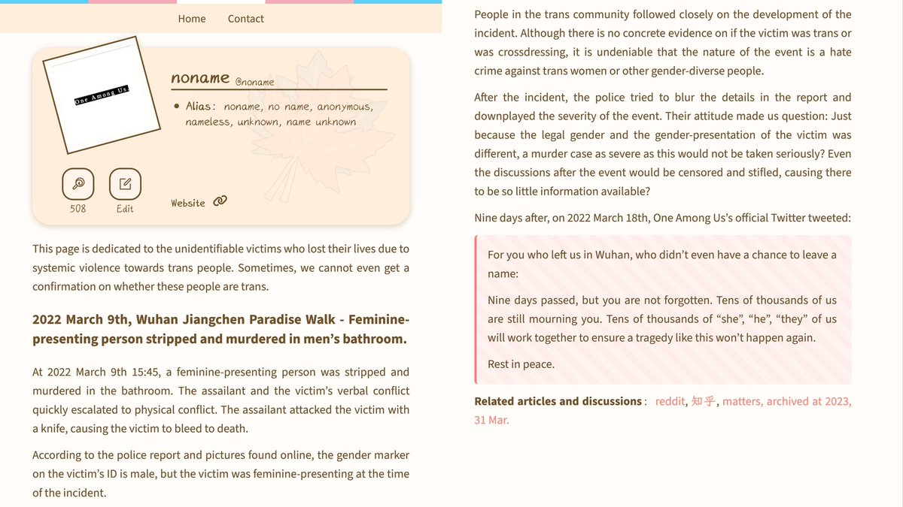
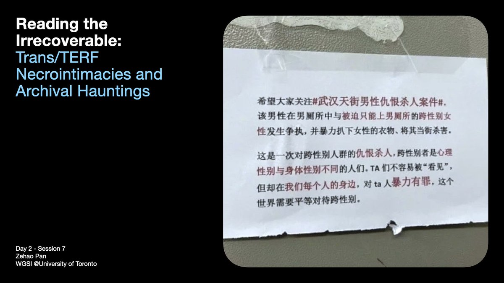
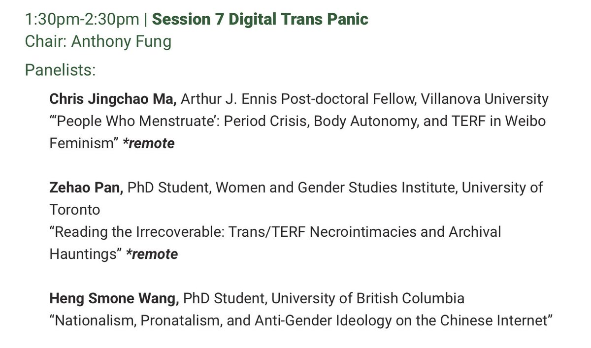

我所在的场次会在大概一个小时后（北京时间3:00-5:00）开始，在这里放一些PPT页面节选。这次报告会提到/批评一些各位比较熟悉的社群组织或个人观点表述；我保证我在这里对武汉天街事件的解读会和你之前听过的所有/大部分观点都不一样。会议链接：
https://t.co/BEURPzSUsk






我所在的场次会在大概一个小时后开始，在这里放一些PPT页面节选，会提到/批评一些各位比较熟悉的社群组织或个人观点表述；我保证我在这里对武汉天街事件的解读会和你之前听过的所有/大部分观点都不一样。会议链接：https://t.co/BEURPzSUsk https://t.co/qGqwhd0Pdn https://t.co/64hdnERPaU
我所在的场次会在大概一个小时后（北京时间3:00-5:00）开始，在这里放一些PPT页面节选。这次报告会提到/批评一些各位比较熟悉的社群组织或个人观点表述；我保证我在这里对武汉天街事件的解读会和你之前听过的所有/大部分观点都不一样。会议链接：https://t.co/BEURPzSUsk https://t.co/5VnWdLUsLN https://t.co/64hdnERPaU
预告一下，今天晚些时候会在 @UAlbertaChina 组织的第23届中国互联网研究会议（Chinese Internet Research Conference）做关于武汉天街事件、反跨女权（TERF）和跨性别纪念相关的报告
https://t.co/FpSeZpKU3h https://t.co/z3wEc9KljV
https://t.co/FpSeZpKU3h https://t.co/z3wEc9KljV